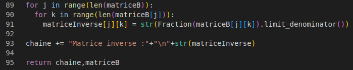
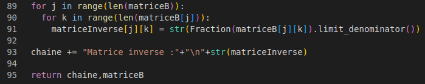

Outil mathématiques diverses
Réalisation de différent programme mathématique
- Multiplication de matrice
- Inversion de matrice
- Nombre premier
- Décomposition en facteur premier
- PGCD
- PPMC
- Factoriel
- Suite Graphique
- Suite et Approximation
Réalisation de différent programme mathématique
 
